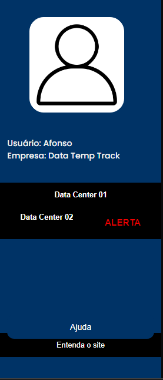
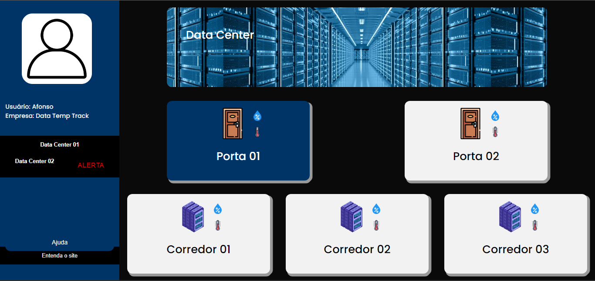
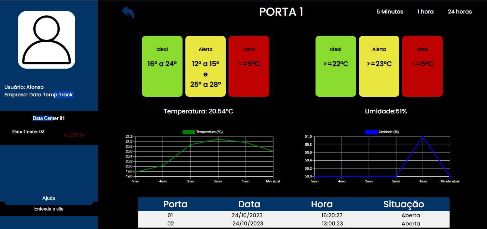

Quando o login for realizado com sucesso o usuário será redirecionado para a dashboard, lá é possível acessar os dados do usuário, selecionar o Data Center que deseja que tenha os dados visualizados, entrar em contato com a equipe e acessar um tutorial de como utilizar o site, como demonstra a figura abaixo:

Ao selecionar um dos Data Centers a tela ao lado muda para exibir as opções que existem dentro do mesmo. No exemplo será mostrado um caso de um Data Center que possui 2 portas e 3 corredores como opções de visualização.

Selecionando uma das opções na tela o usuário se encontra com a visualização dos dados. Dentro dessa tela tem as informações da temperatura e umidade do local, e em caso do local selecionado for uma porta, também será mostrado um log de quando e quantas vezes a porta foi aberta.
